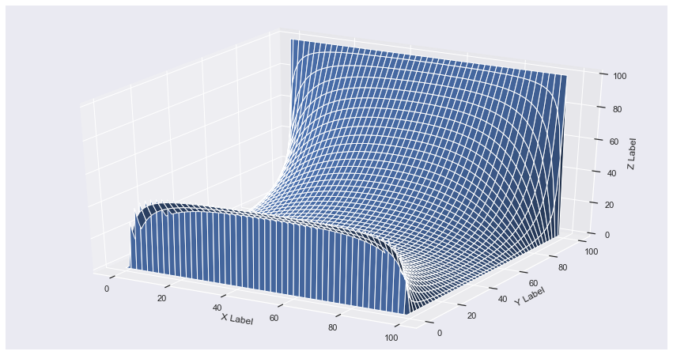

Laplace Equation
We want to solve Laplace equation both analytically and Computationally.
Laplace equation in 2D is :
\( \frac{d^2U}{dx^2} + \frac{d^2U}{dy^2} = 0 \)
Analytic Solution
By considering
\( U(x,y) = X(x)Y(y) \)
one can solve the equation to get analytic solution using periodic boundary conditions
\( U(x,y) = \sum_{n=1}^{\infty}E_{n} \sin \frac{n\pi x}{L}\sinh\frac{n\pi y}{L} \)
Where $E_n$ is a constant to be set by further boundary condition.
Computational Method
There are two methods
- Method of finite Difference
We divide the entire square in to the lattice with equal spacing $\triangle$ in both in the x and y directions. The x and y variables are now discrete:
\( x = x_o + i\triangle \);
\( y = y_o + i\triangle \);
Where, \( i,j = 0,N_{max} = L/D \)
We represent the potential by the arrey \( U(N_{Max},N_{Max}) \)
- Finite Difference Algorithm
\( U(i,j) = \frac{1}{4}[U(i+1,j)+ U(i-1,j) + U(i,j+1) + U(i,j-1)] \)
- Boundary Conditions
\( U(i,N_{max}) = 100, \) (top)
\( U(1,j) = 0, \) (left)
\( U(N_{max},j) = 0, \) (right)
\( U(i,1) = 0, \) (bottom)
We define a function to control boundary conditions.
Coding
import numpy as np from mpl_toolkits.mplot3d import Axes3D import matplotlib.pyplot as plt import seaborn as sns sns.set() import random
'''constants''' N = 100 # Number of lattice points Nitr = 1000 # Number of iterations
def fun(k): if k == 0: return 1 else: return 0
- Initiate list to hold 2D array of U
U = [[0.0 for x in range(N)]for y in range(N)]
- Now we want to impose boundary conditions
def boundary_conditions(U): for i in range(N): U[i][N-1] = 100.0 for j in range(N): U[0][j] = 0.0 for j in range(N): U[N-1][j] = 0.0 for i in range(N): U[i][0] = 0.0 return U
- Now we iterate with this begining configurations:
itr = 0 boundary_conditions(U) while itr < Nitr: for i in range(N): for j in range(N): U[i][j] = (0.25)*(U[(i+1)%N][j] + \ U[(i-1)+(fun(i)*N)][j] + U[i][(j+1)%N] +\ U[i][(j-1)+(fun(j)*N)]) boundary_conditions(U) itr = itr+1
def val(i,j): return U[i][j] fig = plt.figure(figsize = [15,8]) ax = fig.add_subplot(111, projection='3d') x = y = np.arange(0, N, 1) X, Y = np.meshgrid(x, y) ax.set_xlabel('X Label') ax.set_ylabel('Y Label') ax.set_zlabel('Z Label') zs = np.array([val(x,y) for x,y in zip(np.ravel(X), np.ravel(Y))]) Z = zs.reshape(X.shape) ax.plot_surface(X, Y, Z) plt.show()
